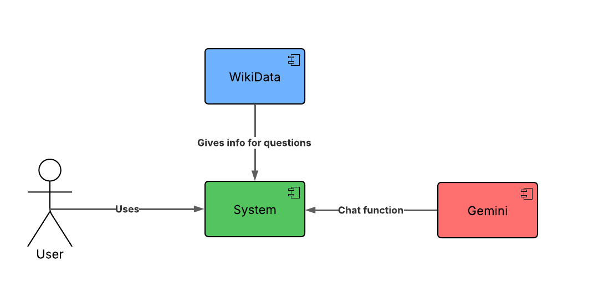
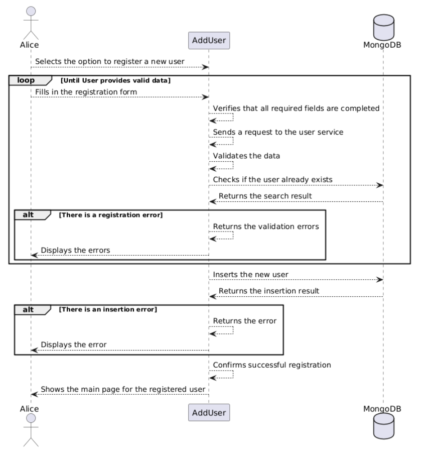
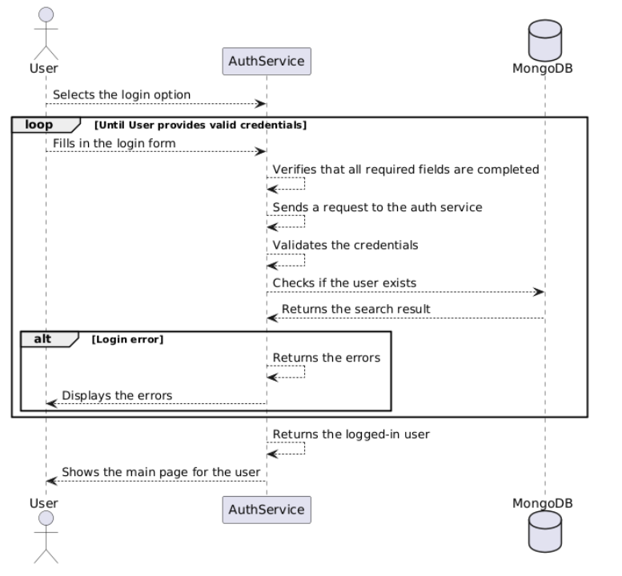
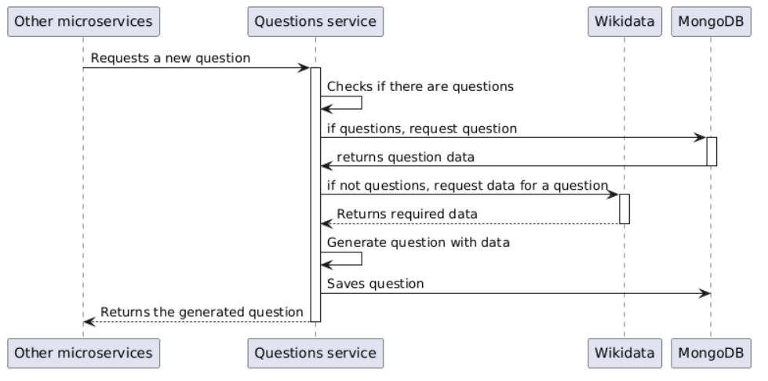

About arc42
arc42, the template for documentation of software and system architecture.
Template Version 8.2 EN. (based upon AsciiDoc version), January 2023
Created, maintained and © by Dr. Peter Hruschka, Dr. Gernot Starke and contributors. See https://arc42.org.
1. Introduction and Goals
The functional requirements that the application will include:
-
The system will have at least a web frontend that will display images and responses.
-
A hint system that will allow users to obtain hints with images.
-
User registration.
-
Users will be able to check their statistics (time played, number of games, games won/lost, etc.).
-
The information for questions and answers will be generated automatically from Wikidata.
-
Gemini will be used for the hint system.
-
Questions must be answered within a specified time limit.
-
Each question will have one correct answer and several incorrect or distracting answers.
-
The system allows to get information about the users by a documented API.
-
The system allows to get information about the generated questions by a documented API.
-
Another play mode about a board with cards, that the user need to get couples cards.
-
The system will have some different thematics for the question play mode, they are:
-
countries
-
flags
-
animals
-
science
-
football
-
movies
-
-
The system will have differents types of difficulty, which vary:
-
The response time, the more difficult, the less time.
-
The score, the more difficult, more points.
-
For using the clue the user lose the half of the points of the round.
-
-
The system will have a ranking, will be based on the points obtained by the users.
1.1. Quality goals
| Quality Objectives | Motivation | Priority |
|---|---|---|
Usability |
Provide a good user experience, with a simple and attractive interface |
High |
Maintainability |
Be able to make modifications to the game relatively easily, such as new questions or new game modes |
Medium |
Acceptable Performance |
To ensure a good user experience, we must provide an application with reduced loading times and smooth gameplay. |
High |
1.2. Stakeholders
| Role/Name | Contact | Expectations |
|---|---|---|
Students |
Yeray Rodríguez Granda, Diego García Gonzalez, Sara Fernández González, Daniel Álvarez Blanco |
Develop a good application |
Teachers |
Diego Martín Fernandez |
Ensure that we develop a good application and learn the concepts taught in class |
Users |
Anyone using the application |
Have fun playing the application we develop |
WikiData |
Wikimedia Deutschland |
They are interested in us using their services |
RTVE |
RTVE |
They want us to provide a good application based on the game "Saber y Ganar" to attract people to the program |
Gemini |
Google DeepMind |
They are interested in us using their services |
2. Architecture Constraints
-
Frontend Restriction: The system will have at least a web frontend that will display images and answers, as well as a hint system that will allow users to obtain hints about the images.
-
Web Deployment: The web application must be deployed and accessible via the internet.
-
User Registration: Users will be able to register in the system and consult their participation history, including the number of games played, correct/incorrect answers, times, etc.
-
Use of the Wikidata API: The questions' information will be automatically generated from Wikidata data.
-
Use of an LLM: Users will be able to interact with the application for each question to obtain hints. A language model (LLM) will be accessed via an API. A technique must be introduced to generate hints from Wikidata data and mitigate incorrect answers and hallucinations during the conversation.
-
Question Model: Questions must be answered within a set time limit. Each question will have one correct answer and several incorrect or distractor answers. Both the correct and incorrect answers will be generated automatically.
-
Creation and Documentation of a Custom API: The system will allow access to user information through a documented API. The system will also provide access to generated questions through an API.
3. Context and Scope
3.1. Business Context

Element |
Description |
User |
Plays the game through his device |
System |
The application that runs the game |
Wikidata |
Gives the info necessary for the questions and answers |
Gemini |
Chat with the user through the System to give clues |
3.2. Technical Context

Element |
Input |
Output |
UserAgent |
User actions |
API requests |
UserAgent |
User interaction |
Webapp requests |
restAPI |
API requests |
Application response |
WebApp |
Webapp requests |
Functional application |
WebApp |
User questions |
LLM requests |
Gemini |
LLM requests |
LLM responses |
Wikidata |
Queries |
Data for questions |
4. 4. Solution Strategy
4.1. 4.1. Technological Decisions
To support the functional and non-functional requirements of WIChat, the following technologies and architectural components were selected to optimize performance, maintainability, and scalability:
-
Programming Language: TypeScript TypeScript was chosen as the main programming language due to its static typing, early error detection, and improved maintainability. It enables safer code than plain JavaScript while allowing reuse of existing JS libraries and code.
-
Frontend Framework: React.js React.js is used to build a modular and interactive user interface, ideal for dynamic quiz generation and chat components.
-
Backend Runtime: Node.js Node.js supports an event-driven, non-blocking architecture, which is well-suited for handling concurrent requests across microservices.
-
Architecture Pattern: Microservices The system is split into independent services for separation of concerns and scalability:
-
webapp: frontend interface. -
gatewayservice: routes requests to backend services. -
authservice: manages user authentication and session control. -
userservice: handles user data and roles. -
historicservice: handles user records for the historic. -
llmservice: interfaces with Gemini for AI-based hint generation. -
questionservice: interfaces with wikidata for question generation. -
cardservice: interfaces for the images generation for the card game. -
gateway-api-service: manage request to the api server.
-
-
Database: MongoDB A NoSQL, document-based database was selected to support flexible schema design and efficient horizontal scaling.
authserviceanduserserviceshare the same MongoDB instance. -
External APIs:
-
Wikidata: Used to dynamically query structured, up-to-date knowledge to generate quiz questions.
-
Gemini (LLM): Integrated via the
llmserviceto generate intelligent hints and chat responses based on question context.
-
-
Observability:
-
Prometheus: Collects metrics from services for monitoring.
-
Grafana: Displays dashboards and alerts for observability and system health.
-
-
Version Control & CI/CD: GitHub GitHub is used for collaborative development and version control. GitHub Actions automates testing and deployments.
-
Containerization: Docker All services are containerized using Docker.
docker-composeorchestrates services locally and in test environments.
4.2. 4.2. Decisions to Achieve Key Quality Goals
The following strategic decisions help fulfill the project’s quality goals:
-
Performance:
-
MongoDB supports fast read/write operations.
-
Asynchronous handling of LLM requests prevents UI blocking.
-
-
Maintainability:
-
Use of TypeScript ensures code clarity and early error detection.
-
Modular microservices and UI components ease code updates and testing.
-
-
Scalability:
-
The microservice-based design enables independent deployment and scaling.
-
Stateless services facilitate horizontal scaling in containerized environments.
-
-
Security:
-
Session-based authentication with encrypted credentials.
-
Role-based access control (RBAC) restricts sensitive operations.
-
System logs all key events: user creations, logins (successful/failed), logouts, and API accesses.
-
-
Usability and Accessibility:
-
UI follows accessibility guidelines to ensure inclusivity.
-
Interactive hints generated by Gemini increase engagement and help users learn.
-
-
Reliability and Testing:
-
Unit and integration tests ensure individual module correctness.
-
End-to-end tests validate complete workflows.
-
Load and performance testing (via Artillery) verify stability under stress.
-
-
Deployment Strategy:
-
The system is prepared for deployment on ECS with Fargate or EC2 with Auto Scaling Groups using Packer-built AMIs.
-
A GitHub self-hosted runner on EC2 automates production deployment workflows.
-
5. Building Block View
5.1. Level 1: Whitebox Overall System

- Motivation
-
This level shows the interaction of the user with the main system of the application, which in turn makes use of external resources.
- Contained Building Blocks
| Name | Description |
|---|---|
Wichat |
Is the main system. Handles user interaction and interacts with external resources |
Gemini |
The LLM used to elaborate hints for the user |
WikiData |
External data source that supplies trivia information. |
5.2. Level 2: Internal Structure of Level 1 Blocks

This level shows the division between the frontend and the backend, as well as the interface that connects both services.
- Contained Building Blocks
| Name | Description |
|---|---|
WiChat FrontEnd |
Provides a user interface (UI) for end-users like Alice to interact with the application. |
restAPI |
Acts as an intermediary between the FrontEnd and Microservices, enabling communication via REST API. |
Microservices |
Delivers business logic and modularity to the backend, allowing for easy distribution and updates. |
WikiData |
External data source that supplies trivia information. |
Gemini |
The LLM used to elaborate hints for the user |
5.3. Level 3: Internal Structure of Level 2 Blocks

In this level of descomposition of the system we identify the different views of the webapp and microservices of the WichatServices.
- Contained Building Blocks
| Name | Description |
|---|---|
Auth MicroService |
Handles user authentication, working across microservices. Manages login data in a MongoDB database. |
UserData MicroService |
Provides user statistics and game history to the UI, including average scores and past performance. |
Questions MicroService |
Abstracts WikiData API interactions, providing question generation services to other microservices. Manages game lifecycle (creation, maintenance, ending), records scores, and uses MongoDB for the questions. |
WebApp |
Client-side application (WiChat) that interacts with all microservices. |
WikiData |
External data source that supplies trivia information. |
Gemini |
The LLM used to elaborate hints for the user |
6. Runtime View
6.1. Registration
Process of registering a new user.

6.2. Login
Process of logging in for a registered user.

6.3. Game
Process of delivering the best digital experience to the user.

6.4. Request Questions
Process of obtaining questions for the game

7. Deployment View
7.1. Infrastructure Level 1

- Motivation
-
While developing and testing the app it will be run on the developer’s localhost enviroment (Using docker for standarization). However, in the production stage we aim for the aplication to be running on a Azure Server.
- Quality and/or Performance Features
-
We haven’t tested the app’s performance
- Mapping of Building Blocks to Infrastructure
| Element | Description |
|---|---|
Azure Server |
Where the application will be deployed. |
Docker Engine |
Daemon inside the azure server which will run our docker containers |
WebApp |
It is the frontend of our application. |
MicroServices |
They create the backend of the application, they manage every aspect of the application. |
WikiData |
It is an external service which will provide the necessary data for the application to work properly. |
Gemini |
We ara going to use Gemini for provide the clues to the user by conversation. |
8. Cross-cutting Concepts
This section describes overall, principal regulations and solution ideas that are relevant in multiple parts (= cross-cutting) of your system. Such concepts are often related to multiple building blocks. They can include many different topics, such as
-
models, especially domain models
-
architecture or design patterns
-
rules for using specific technology
-
principal, often technical decisions of an overarching (= cross-cutting) nature
-
implementation rules
Concepts form the basis for conceptual integrity (consistency, homogeneity) of the architecture. Thus, they are an important contribution to achieve inner qualities of your system.
Some of these concepts cannot be assigned to individual building blocks, e.g. security or safety.
The form can be varied:
-
concept papers with any kind of structure
-
cross-cutting model excerpts or scenarios using notations of the architecture views
-
sample implementations, especially for technical concepts
-
reference to typical usage of standard frameworks (e.g. using Hibernate for object/relational mapping)
A potential (but not mandatory) structure for this section could be:
-
Domain concepts
-
User Experience concepts (UX)
-
Safety and security concepts
-
Architecture and design patterns
-
"Under-the-hood"
-
development concepts
-
operational concepts
Note: it might be difficult to assign individual concepts to one specific topic on this list.

See Concepts in the arc42 documentation.
8.1. Domain Model
-
Users: Represents the players, including data such as name and password.
-
Questions: Model that includes the image, statement, answer options (correct and incorrect), and the source (Wikidata).
-
Hints: Data dynamically generated from a language model (LLM).
-
Historic: Model that includes the answers of the users to questions in the game, it saves the question, the options, answer of the user and the correct answwer.
-
Ranking: Model that includes the stats of users. It has data as the number of correct and incorrect answers, total points obtained and time played by the user.
8.2. User Experience concepts (UX)
The user interacts with the application through a user interface. In this interface, the user must either register or log in. Once the user has been identified, they can start a quiz or check their participation history.
Regarding the quiz, the user will see a question on the screen along with a series of possible answers. When one of these answers is selected, the user will receive feedback based on whether the chosen answer is correct or not. Additionally, there will be a chat in the bottom left corner that will interact with the user to provide a series of hints.
8.3. Microservices architecture
The system will work coordinating little closed systems called microservices, these will be complete applications that work together using an API manager (gateway) so they comunicate and give the user a complete experience.
8.4. Data Persistence
To assure the data persistence we will use a non relational DB (using mongoDB) with schemas that will connect the data for every service in the way they need, without the rigidity of relational DBs.
8.5. Security
To assure that the passwords are safely saved in our DB, the system wil crypt them using bCrypt.
9. Architecture Decisions
9.1. Architecture design
9.1.1. Microservices
Use of a microservices-based architecture for the project.
-
Status: Approved
-
Context: A scalable and modular architecture was required for the project. A microservices structure was preferred due to the flexibility it offers in distributing responsibilities, independently scaling components, and supporting long-term system evolution.
-
Alternatives Considered:
-
Microservices - Chosen for its ability to decouple components, enable independent deployments, and improve maintainability in distributed teams.
-
Modular Monolith - Considered for its simplicity, but limited in terms of scalability and long-term adaptability.
-
Serverless Functions - Evaluated for specific components, but not suitable as the main architecture due to orchestration and monitoring complexity.
-
-
Decision: We chose a microservices architecture as the foundation for the project. This decision aligns with the need to independently scale certain services, maintain a clear separation of concerns, and allow teams to work in parallel. Each service will have its own lifecycle and will communicate through well-defined APIs (REST or gRPC), using asynchronous messaging where appropriate. In parallel, we decided to use TypeScript with React on the frontend, providing a robust codebase and a gradual transition from JavaScript.
-
Consequences:
-
Enables independent scaling of services based on demand.
-
Improves maintainability by decoupling business logic into autonomous services.
-
Facilitates parallel work among multiple teams or developers.
-
Introduces complexity in service orchestration, monitoring, and deployment.
-
Requires a clear strategy for communication, service discovery, and failure handling.
-
Some team members will need time to get familiar with a distributed architecture.
-
Establishes a solid foundation for the project’s growth and long-term maintainability.
-
9.1.2. REST
Use of RESTful APIs with JSON as the communication protocol between microservices.
-
Status: Approved
-
Context: Given the choice of a microservices architecture, a communication protocol was needed to enable interaction between services. REST, using HTTP and JSON, was selected for its simplicity, ubiquity, and ease of integration across different services and languages.
-
Alternatives Considered:
-
REST with JSON - Chosen for its wide adoption, human readability, and straightforward implementation using HTTP standards.
-
gRPC - Considered for its performance and strong typing, but requires more tooling and is less accessible for teams unfamiliar with Protocol Buffers.
-
GraphQL - Evaluated for client-to-service communication, but not ideal for service-to-service interactions due to complexity and over-fetching/under-fetching concerns in internal APIs.
-
-
Decision: We chose to use RESTful APIs with JSON as the standard for inter-service communication. REST provides a simple, stateless model that aligns well with HTTP-based infrastructure and can be easily implemented and consumed by all services. JSON was selected for its readability and native support in JavaScript and TypeScript environments.
-
Consequences:
-
Simplifies service integration with well-understood HTTP semantics.
-
Facilitates debugging and monitoring due to human-readable payloads.
-
Promotes loose coupling between services via clear API contracts.
-
May introduce performance overhead compared to binary protocols in high-throughput scenarios.
-
9.2. Development technologies
9.2.1. TypeScript
Usage of TypeScript for the backend and frontend development.
-
Status: Modified (!)
-
Context: A language was needed for web development, and a statically typed one was preferred over a dynamically typed one.
-
Alternatives Considered:
-
TypeScript
-
Java with SpringBoot
-
-
Decision: Since the initial code in the repository was in JavaScript, we ultimately chose TypeScript (even though several team members are not very experienced with it) because otherwise, we would have had to migrate the entire project to Java with Spring.
-
Consequences: It is expected to be easier to identify errors during programming and to avoid using Spring annotations for web-level functionality.
9.2.2. Node.js
Usage of Node.js for the backend development.
-
Status: Approved
-
Context: A platform was needed for web development, and the base project was already in Node.js
-
Alternatives Considered:
-
Node.js
-
SpringBoot
-
-
Decision: Since the initial code in the repository was already in Node.js, we ultimately chose it (even though several team members are not very experienced with it) because otherwise, we would have had to migrate the entire project to Java with SpringBoot.
-
Consequences: It is expected to be easier to identify errors during programming and to avoid using Spring annotations for web-level functionality.
9.2.3. React & TypeScript
Usage of React with TypeScript for the frontend development.
-
Status: Approved
-
Context: A programming language was needed for frontend development. A statically typed language was preferred over a dynamically typed one to improve maintainability, scalability, and early error detection during development.
-
Alternatives Considered:
-
TypeScript with React
-
Html with swig
-
-
Decision: Since the initial code in the repository was written in JavaScript with React we chose to use TypeScript with React. Although some team members lack extensive experience with TypeScript, this choice allows for an easier transition from JavaScript and avoids the need for a complete migration to a Java + Spring Boot stack, which would be more time-consuming and complex.
-
Consequences:
-
Improves error detection at compile-time thanks to static typing.
-
Maintains compatibility and continuity with the existing codebase.
-
Avoids using Spring annotations and configuration on the frontend.
-
Some team members may face a learning curve when adapting to TypeScript.
-
Encourages a more robust and maintainable codebase in the long term.
-
9.2.4. MongoDB
Usage of MongoDB as the primary database for the project.
-
Status: Approved
-
Context: A database was needed for the project. A NoSQL option was preferred due to the flexibility it offers in handling unstructured data and its seamless integration with Node.js. MongoDB, being a document-based NoSQL database, fits well with our technology stack.
-
Alternatives Considered:
-
MongoDB – Chosen for its native support in JavaScript/Node.js environments, flexible schema design, and active community support.
-
Firebase – Considered for its real-time capabilities, but less flexible for complex queries and self-hosting.
-
CouchDB – Offers similar document storage but lacks the maturity and community support of MongoDB.
-
-
Decision: We chose MongoDB as the primary database for the project. Given that the backend is written in JavaScript using Node.js, MongoDB offers seamless integration and a flexible, schema-less design that accelerates development. In parallel, we decided to use TypeScript with React on the frontend. Although some team members have limited experience with TypeScript, it enables a smoother transition from JavaScript while improving code quality and maintainability.
-
Consequences:
-
Allows scalable and flexible data modeling with a NoSQL approach.
-
Integrates naturally with the Node.js ecosystem, reducing development friction.
-
Improves error detection at compile-time on the frontend thanks to static typing with TypeScript.
-
Maintains compatibility and continuity with the existing JavaScript codebase.
-
Avoids the need for a complete migration to a Java + Spring Boot stack.
-
Some team members may require time to adapt to TypeScript and MongoDB.
-
Encourages a more robust, maintainable, and modern development workflow.
-
9.3. Infrastructure
9.3.1. Docker
Use of Docker for containerization of services and infrastructure components.
-
Status: Approved
-
Context: At the start of the project, we needed a standardized way to build, run, and deploy services consistently across different environments and team members’ machines. Docker was proposed as the foundation for the project to encapsulate application environments and dependencies. It aligns with modern DevOps practices and supports scalability and portability, especially in a microservices architecture.
-
Alternatives Considered:
-
Docker - Chosen for its maturity, extensive documentation, and wide industry adoption. Enables environment consistency and simplifies CI/CD processes.
-
Podman – Considered for its daemonless and rootless architecture, but lacked team familiarity and broader ecosystem integration.
-
Manual setup with local environments – Rejected due to inconsistency, high onboarding effort, and poor scalability for a microservices-based project.
-
-
Decision: We adopted Docker as the core tool for containerizing all services and infrastructure components in the project. Each microservice runs in its own container, with Docker Compose used for local orchestration and environment setup. This ensures consistent behavior across development, testing, and production environments.
-
Consequences:
-
Guarantees consistent environments across all stages of development.
-
Simplifies onboarding by reducing environment setup to a single command.
-
Enhances reproducibility, isolation, and portability of services.
-
Serves as a foundation for future deployment with container orchestration tools (Azure).
-
9.4. Strategies
9.4.1. Trunk-Based Development
Use of Trunk-Based Development for managing the main branch (master) and releases.
-
Status: Approved
-
Context: A protection of the main branch (master) was required to prevent direct commits and to have stricter branch control, as well as a way to manage releases.
-
Alternatives:
-
TBD
-
Direct Pull Request to master
-
-
Decision: The decision was made to use Trunk-Based Development since it met all the required needs. All branches originate from the develop branch, and once the sprint is completed, it is merged into master to prepare the release, thus protecting the main branch from errors.
-
Consequences: This approach is expected to keep the master branch clean and facilitate releases while preventing direct commits.
9.4.2. CI/CD – GitHub Actions
Adoption of GitHub Actions as the platform for continuous integration and continuous deployment.
-
Status: Approved
-
Context: The project was initialized from a base template that already included predefined workflows using GitHub Actions. The team needed an integrated CI/CD solution that supports automation of tests, builds, and deployments. GitHub Actions, being native to the GitHub ecosystem, provides seamless integration with the repository and requires minimal additional tooling.
-
Alternatives Considered:
-
GitHub Actions – Chosen due to its presence in the project template, native integration with GitHub, and sufficient capabilities for CI/CD pipelines.
-
GitLab CI/CD – Considered for its powerful pipeline syntax and features, but not applicable since the project is hosted on GitHub.
-
Jenkins – Known for its flexibility and plugins, but introduces overhead in setup, maintenance, and infrastructure management.
-
-
Decision: We decided to continue using GitHub Actions as the primary CI/CD tool for the project. Since workflows were already defined in the base template, this decision enabled the team to maintain momentum without switching platforms or rewriting existing automation. GitHub Actions handles automated testing, building Docker images, and deploying services.
-
Consequences:
-
Enables fast and easy automation of CI/CD directly within the GitHub ecosystem.
-
Reduces setup time by leveraging existing workflow templates.
-
Provides visibility and traceability of pipeline runs in pull requests and commits.
-
May require optimization as the project grows in complexity or if advanced pipeline features are needed.
-
9.5. Documentation
9.5.1. API – OpenAPI
Use of OpenAPI for documenting the RESTful API.
-
Status: Approved
-
Context: The project includes a RESTful API that needs to be clearly documented for both internal and external developers. Accurate, machine-readable API documentation is essential to ensure ease of integration, testing, and long-term maintenance. OpenAPI (formerly Swagger) was selected for its standardization, tooling ecosystem, and compatibility with REST principles.
-
Alternatives Considered:
-
OpenAPI – Chosen for its wide adoption, strong tooling (e.g., Swagger UI, Codegen), and ability to produce both interactive and machine-readable documentation.
-
Manual Markdown Documentation – Considered for simplicity, but rejected due to lack of synchronization with the actual API code and increased maintenance burden.
-
Postman Collections – Useful for testing, but not a full replacement for formal specification and integration into CI/CD workflows.
-
-
Decision: We decided to use OpenAPI to document the project’s RESTful API. The API definition is written in YAML or JSON following the OpenAPI 3.0 specification, and integrated with Swagger UI for interactive documentation. This ensures that API contracts are clear, versioned, and easily accessible for both backend and frontend developers.
-
Consequences:
-
Standardizes API documentation across the team.
-
Allows auto-generation of client libraries and server stubs.
-
Supports live testing through Swagger UI.
-
Requires maintaining the OpenAPI spec as the API evolves to avoid inconsistencies.
-
10. Quality Requirements
10.1. Quality Tree
Quality |
Description |
Scenario |
Usability |
The application must be easy to learn to use by design. |
SC1 |
Performance |
The application should have a waiting time of no more than 5 seconds between actions. |
SC2 |
Persistence |
The system should prevent any possible lose of user information. |
SC3 |
Integrity |
The system should grant confidentiality to the user’s data. |
SC4 |
10.2. Quality Scenarios
ID |
Scenario Description |
SC1 |
A first-time user interacts with the application and finds all functionalities self-explanatory. |
SC2 |
When answering a question the user experiences a maximum delay of 5 seconds. |
SC3 |
After an unexpected shutdown, the system restores all user data (e.g., achievements, preferences) without corruption. |
SC4 |
Sensitive user data (e.g., login credentials, payment info) is securely stored and never exposed in logs or APIs. |
11. Risks and Technical Debts
11.1. Risks
| Risk | Relevance | Considerations |
|---|---|---|
Limited knowledge of certain tools or languages |
High |
A solution could be to use the tools and languages that are most well-known to the team members. Also, each member should try to learn those aspects they know less about. |
Limited expertise in emerging technologies |
High |
Ignorance of emerging technologies relevant to the project might result in missed opportunities for innovation and efficiency. |
The team has not worked together before |
Low |
A suggestion could be to maintain a good communication and inform about any aspect that could affect others. |
Delivery time |
Medium |
Being many members can difficult the communication. However, if the previous suggestions are followed there should not be any problem. |
Connection failure |
Medium |
It is possible that some of the parts of the project that may require a connection to a server are not available, and due to time it may cause problems. |
Documentation |
Low |
Since the documentation is carried out at the same time as the project, it can generate delays. |
Team member losses |
High |
This causes reorganization of all tasks and breaks the flow. |
International power failure |
High |
A global power outage could disrupt development activities and delay the project. Contingency planning, such as using backup power systems and ensuring critical systems are stored in cloud environments, might mitigate this risk. |
11.2. Technical debts
| Technical Debt | Relevance | Considerations |
|---|---|---|
Not implementing automated tests from the beginning |
High |
It is not a recommended practice and can avoid problems in the future. |
Excessive separation of duties |
Low |
This results in team members being unaware of project modules they did not work on. |
Few security measures |
Medium |
There are security holes in the application. |
12. Testing Report
12.1. Unit Tests
During this testing cycle, the system was evaluated using code coverage metrics and code duplication analysis. Overall code coverage reached 81.2%, which is acceptable but could be improved. Code duplication remains low at 1.8%, indicating good technical health of the codebase. Each component was tested with its own test suite, covering the main functionalities of the component.
12.1.1. Code Coverage
We used SonarCloud to analyze the code coverage and code duplication of our unit tests. The results are as follows:

As shown above, code coverage exceeds 80%, which was our target, and code duplication remains below 3%. Achieving these results was a challenging task, but we succeeded thanks to the collective effort of the entire team. Some components are not covered at all, but they are either non-critical to the system or contain functionalities that are not essential.
12.2. Acceptance Tests
Acceptance tests are designed to automatically ensure that the system fulfills its functional requirements, verifies its integrity especially in relation to external sources like Wikidata and detects potential issues that might otherwise go unnoticed during development. These tests play a crucial role in validating the system from the user’s perspective and help maintain overall reliability as the system evolves.
We tested the following scenarios:
-
User registration
-
User login
-
Gameplay
-
Historic page
12.3. Load Tests
Load tests are designed to evaluate the system’s performance under various conditions, including high traffic and heavy loads. These tests help identify potential bottlenecks and ensure that the system can handle the expected number of users and requests without degradation in performance. We used Artillery to simulate a large number of users and requests, allowing us to assess the system’s response times and resource utilization under different scenarios.
We tested the following scenarios:
-
Login

-
Registration
-
Lobby

-
Gameplay

-
Results

As observed in the login load tests, the system demonstrated excellent performance under stress conditions. Response times remained consistently low and stable, indicating that the login functionality is well-optimized and capable of handling multiple concurrent users without degradation in performance.
Similarly, the register load tests showed that the system maintained strong performance even under significant load. Response times remained within optimal limits, confirming that the registration process is both efficient and scalable.

However, in the case of the lobby, performance under load was noticeably poorer. This degradation is primarily attributed to the fact that every user who connects to the lobby simultaneously queries the ranking system, which creates a bottleneck. This indicates a need for optimization in how ranking data is retrieved or cached during high-traffic scenarios.

Lastly, during gameplay load testing, the system again performed well. Response times remained within acceptable thresholds despite the additional load of executing queries to Wikidata to dynamically generate questions. This shows that the gameplay logic is resilient and can manage external data dependencies without major performance drawbacks.
All load tests were conducted under relatively low-traffic conditions due to the limitations of the virtual machine. However the results provide a useful initial insight into system behavior under concurrent access.
12.4. Usability Tests
12.4.1. Objective
To evaluate the user experience across core features of the application — login, registration, lobby, gameplay, and history — using a diverse group of 5 users with varying levels of technical proficiency, all on desktop or laptop devices.
12.4.2. User 1 – Low Technical Proficiency
Device: Laptop
Tasks: Register, log in, start a game
Observations: - Difficulty locating the registration button; label was not intuitive. - Confusion around password requirements, which were not clearly communicated. - Once inside the gameplay screen, the user navigated it easily.
Suggestions: - Use clearer and more intuitive button labels. - Add password guidelines or helper text in the registration form.
12.4.3. User 2 – High Technical Proficiency
Device: Desktop
Tasks: Log in, join a lobby, view match history
Observations: - No issues navigating the interface. - Noted that the history section could include more detailed information like timestamps or scores.
Suggestions: - Improve the history section with additional data and filtering options.
12.4.4. User 3 – Medium Technical Proficiency
Device: Laptop
Tasks: Register, access the lobby, view ranking
Observations: - Experienced a noticeable delay when entering the lobby; uncertain if the page was loading.
Suggestions: - Add a loading spinner or status message for the lobby.
12.4.5. User 4 – High Technical Proficiency
Device: Desktop
Tasks: Quick registration, play a game, view results
Observations: - Smooth interaction with the system. - Suggested the results screen could benefit from stronger visual elements to highlight performance.
Suggestions: - Improve the visual presentation of game results (e.g., use color coding or progress bars).
12.4.6. User 5 – Low Technical Proficiency
Device: Laptop
Tasks: Log in, access match history
Observations: - Difficulty locating the history section; navigation wasn’t immediately clear. - Found the login process simple and straightforward.
Suggestions: - Make the history section more visible or accessible from the main interface.
12.5. Overall Conclusions
The application generally offers a smooth and intuitive experience for users with moderate to high technical skills. However, users with limited technical experience encountered minor usability challenges, particularly related to navigation between the menus.
Performance concerns were noted in the lobby, and some areas (e.g., history and results) could benefit from improved visual structure and user guidance.
All tests were conducted using desktop or laptop devices, ensuring consistent interaction formats across participants.
13. Glossary
| Term | Definition |
|---|---|
LLM (Large Language Model) |
Large Language Model based on artificial intelligence and deep learning. It is used to process and generate text with contextual understanding, such as OpenAI’s GPT, Google Bard, and others. |
Microservices Architecture |
A software architecture style in which an application is divided into small independent services that communicate with each other through APIs. Each microservice focuses on a specific functionality and can be developed, deployed, and scaled independently. |
Docker |
A containerization platform that allows packaging applications and their dependencies into portable containers. It facilitates consistent execution across different environments without worrying about compatibility issues. |
JavaScript |
An interpreted programming language primarily used for web development. It enables the creation of interactive and dynamic pages, functioning both in the browser and on the server through environments like Node.js. |
React |
A JavaScript library developed by Meta (Facebook) for building interactive and efficient user interfaces. It utilizes a component-based model and a Virtual DOM to improve performance in web applications. |
Node.js |
A server-side JavaScript runtime environment built on Google Chrome’s V8 engine. It allows building scalable and high-performance applications using an asynchronous, event-driven programming model. |
Backend |
The part of an application that handles business logic, databases, authentication, and communication with the frontend. It is typically developed using technologies such as Node.js, Python, or Java. |
Frontend |
The visual interface of an application with which users interact. It is built using HTML, CSS, and JavaScript, along with frameworks like React, Angular, or Vue.js. |
Express.js |
A minimalist web framework for Node.js that simplifies the creation of applications and APIs. It provides tools for handling routing, middleware, and HTTP requests efficiently. |
API (Application Programming Interface) |
A set of protocols and tools that allow different software components to communicate with each other. APIs define the methods and data formats for interacting with an application or service. |
MongoDB |
A NoSQL database that stores data in flexible, JSON-like documents. It is designed for scalability and performance, making it suitable for modern applications requiring large volumes of unstructured data. |
Authentication |
The process of verifying the identity of a user or system, typically through credentials like usernames and passwords. It ensures that only authorized users can access specific resources or services. |
Authorization |
The process of granting or denying access to specific resources based on the authenticated identity. It determines what actions a user or system is allowed to perform within an application. |
Docker Compose |
A tool for defining and running multi-container Docker applications. It allows users to define all services (e.g., databases, APIs) in a |
CI/CD (Continuous Integration / Continuous Deployment) |
A set of practices that involve automatically integrating and testing code changes in a shared repository (CI), and automatically deploying those changes to production (CD). It helps ensure faster delivery and higher quality of software. |
Swagger |
A framework for API documentation and testing. Swagger provides tools for auto-generating API documentation, allowing both developers and users to understand and interact with the API endpoints. |
WebSocket |
A communication protocol that provides full-duplex communication channels over a single TCP connection. It is commonly used for real-time applications, such as live chat or gaming. |
Unit Test |
A software testing technique that involves testing individual components or units of a program in isolation. Unit tests help identify bugs early and ensure that each component works as expected. |
Integration Test |
A testing technique where individual software components are tested together to ensure they function correctly as a whole. It typically tests interactions between services, databases, or external APIs. |
Web Application Firewall (WAF) |
A security system that monitors and filters HTTP traffic to and from a web application. It helps protect against common threats, such as SQL injection or cross-site scripting (XSS). |
JSON (JavaScript Object Notation) |
A lightweight data interchange format that is easy to read and write for humans and machines. JSON is often used for transmitting data between a server and a web application. |
WebSocket |
A communication protocol that enables bidirectional, real-time communication between a client and a server over a single, long-lived connection. WebSockets are commonly used for applications like live chat or real-time notifications. |